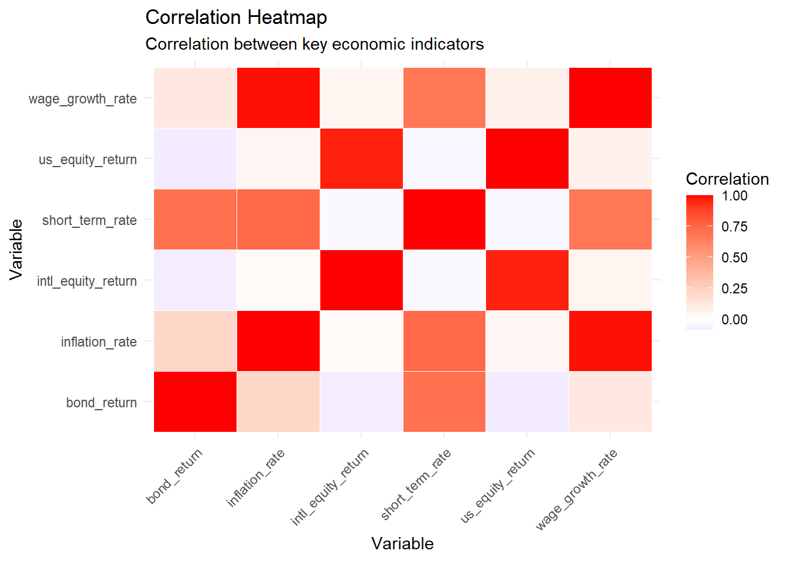
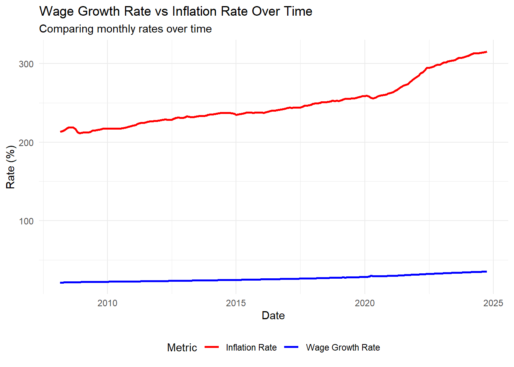
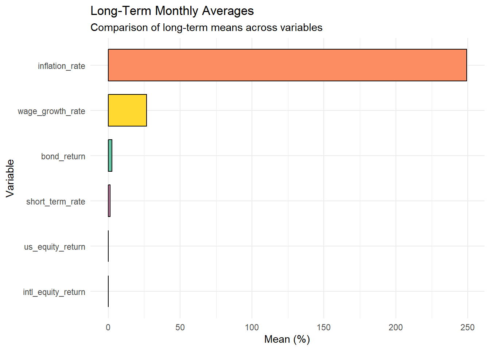

Monte Carlo-Informed Selection of CUNY Retirement Plans
Introduction
CUNY offers two retirement plans for its employees: the Teachers’ Retirement System (TRS) and the Optional Retirement Plan (ORP). Each plan has unique characteristics and risks. TRS provides a defined benefit with predictable, inflation-adjusted income, whereas ORP operates like a defined contribution plan, where income depends on investment performance and withdrawal rates.
This report evaluates these plans through a Monte Carlo simulation to assess: - Retirement income stability and adequacy. - The probability of depleting funds under ORP. - Income gaps between TRS and ORP under different scenarios.
The analysis uses historical data from FRED and Alpha Vantage APIs for key economic variables, including wage growth, inflation, and market returns.
Data Retrieval Functions
To fetch the necessary data for the analysis, we define custom functions that interface with the Alpha Vantage and FRED APIs. These functions handle the data retrieval, ensure proper error handling, and format the data appropriately for further analysis. Below are the details of the functions used in this process:
Code
library(httr2)library(jsonlite)library(tidyverse)library(gt)library(dplyr)library(gtExtras)library(tidyr)library(ggplot2)library(stringr)read_api_key <-function(filepath) {if (!file.exists(filepath)) {stop("API key file does not exist: ", filepath) } key <-readLines(filepath, warn =FALSE) key <-trimws(key[1]) if (nchar(key) ==0) {stop("API key file is empty or improperly configured: ", filepath) }return(key)}# Read API keysalpha_vantage_key <-read_api_key("alpha_vantage_key.txt")fred_key <-read_api_key("fred_key.txt")# Define a function to fetch data from Alpha Vantageget_alpha_data <-function(symbol, interval ="TIME_SERIES_DAILY", api_key) { url <-paste0("https://www.alphavantage.co/query?function=", interval,"&symbol=", symbol, "&apikey=", api_key, "&outputsize=full&datatype=json")# Send request and check response response <-request(url) %>%req_perform()if (response %>%resp_status() !=200) {stop("Failed to retrieve Alpha Vantage data. HTTP Status: ", response %>%resp_status()) } data <-fromJSON(response %>%resp_body_string()) timeseries <- data[["Time Series (Daily)"]]if (is.null(timeseries)) stop("Failed to retrieve Alpha Vantage data for symbol: ", symbol) df <-as.data.frame(do.call(rbind, timeseries)) df$date <-rownames(df)rownames(df) <-NULL# Data cleaning and processing df <- df %>%rename(close =`4. close`) %>%mutate(date =as.Date(date),close =as.numeric(close) ) %>%arrange(date) df <- df %>%mutate(month =format(date, "%Y-%m")) %>%group_by(month) %>%summarize(monthly_return =last(close) /first(close) -1,.groups ='drop' ) %>%mutate(date =as.Date(paste0(month, "-01"))) %>%select(date, monthly_return)return(df)}# Define a function to fetch data from FREDget_fred_data <-function(series_id, api_key) { url <-paste0("https://api.stlouisfed.org/fred/series/observations?series_id=", series_id, "&api_key=", api_key, "&file_type=json")# Send request and check response response <-request(url) %>%req_perform()if (response %>%resp_status() !=200) {stop("Failed to retrieve FRED data. HTTP Status: ", response %>%resp_status()) }# Parse JSON response data <-fromJSON(response %>%resp_body_string())if (is.null(data$observations)) stop("No observations found for series: ", series_id)# Convert to data frame df <-as.data.frame(data$observations) %>%mutate(date =as.Date(date),value =suppressWarnings(as.numeric(value)) ) %>%filter(!is.na(value)) %>%select(date, value)return(df)}
Data Acquisition
To conduct the analysis, we first need to gather the relevant historical data. The data sources include the FRED (Federal Reserve Economic Data) and Alpha Vantage APIs. Below is the detailed process of obtaining and processing the data:
# 4. Visualizations# (1) Correlation Heatmapcorrelation_heatmap <- correlation_matrix %>%as_tibble(rownames ="variable1") %>%pivot_longer(cols =-variable1, names_to ="variable2", values_to ="correlation")ggplot(correlation_heatmap, aes(x = variable1, y = variable2, fill = correlation)) +geom_tile(color ="white") +scale_fill_gradient2(low ="blue", high ="red", mid ="white", midpoint =0) +labs(title ="Correlation Heatmap",subtitle ="Correlation between key economic indicators",x ="Variable", y ="Variable", fill ="Correlation") +theme_minimal() +theme(axis.text.x =element_text(angle =45, hjust =1))

Code
# (2) Time Series Visualization: Inflation Rate and Wage Growth Rateggplot(all_data, aes(x = date)) +geom_line(aes(y = wage_growth_rate, color ="Wage Growth Rate"), linewidth =1) +geom_line(aes(y = inflation_rate, color ="Inflation Rate"), linewidth =1) +labs(title ="Wage Growth Rate vs Inflation Rate Over Time", subtitle ="Comparing monthly rates over time",x ="Date", y ="Rate (%)", color ="Metric") +theme_minimal() +theme(legend.position ="bottom") +scale_color_manual(values =c("Wage Growth Rate"="blue", "Inflation Rate"="red"))

Code
# (3) Bar Chart: Long-Term Monthly Average Comparisonlong_term_means %>%pivot_longer(cols =everything(), names_to ="Variable", values_to ="Mean") %>%ggplot(aes(x =reorder(Variable, Mean), y = Mean, fill = Variable)) +geom_bar(stat ="identity", color ="black", width =0.7) +labs(title ="Long-Term Monthly Averages",subtitle ="Comparison of long-term means across variables",x ="Variable", y ="Mean (%)") +coord_flip() +theme_minimal() +scale_fill_brewer(palette ="Set2") +theme(legend.position ="none")

Correlation Matrix Analysis
Wage Growth Rate and Inflation Rate: The correlation between these two is very high (0.989), indicating that wage growth is often closely aligned with inflation trends. This aligns with the economic concept of the “wage-price spiral,” where wage increases drive price hikes, which in turn fuel further wage growth.
U.S. Stock Market vs. International Stock Market Returns: The correlation is extremely high (0.967), reflecting the strong interdependence between global stock markets. This suggests that in a globalized economy, the performance of the U.S. stock market significantly influences international stock markets.
Bond Returns vs. Short-Term Debt Returns: There is a strong correlation (0.711) between bond returns and short-term debt returns, indicating internal consistency within the yield curve of the bond market, particularly when interest rates fluctuate.
Inflation Rate vs. Short-Term Debt Returns: The correlation between inflation and short-term debt returns is relatively high (0.742), suggesting that when inflation rises, short-term interest rates often increase as well. Central banks typically raise rates to curb inflation.
Stock Market vs. Other Economic Indicators: The correlation between stock markets (both U.S. and international) and wage growth or inflation is weak (approximately 0.05–0.07), indicating that stock market fluctuations have a limited direct relationship with real economic variables like wages and inflation.
Long-Term Monthly Averages Analysis
Wage Growth Rate and Inflation Rate:
The long-term average wage growth rate is 26.6905, indicating a relatively stable trend.
The long-term average inflation rate is 249.212, which is significantly higher than other indicators, as this metric represents the cumulative price index (CPI).
Stock Market Returns:
The long-term average return of the U.S. stock market is 0.00715, while the international stock market return averages 0.00423. Both show relatively low but positive growth in the long term.
The small difference in their long-term averages highlights the high correlation between global stock markets.
Bond vs. Short-Term Debt Returns:
The average return on bonds is 2.58485, higher than the short-term debt return average of 1.44055.
This confirms the expected term structure theory, where long-term bonds typically offer higher returns than short-term debt.
Overall, long-term data suggests that wage growth and inflation trends are significantly higher than other financial indicators, while stock market and bond returns are relatively low but stable. Short-term debt returns are lower, likely influenced by significant monetary policy effects. These averages provide crucial reference points for further analysis of economic volatility and risk.
Mean, Variance, and Standard Deviation Analysis
Wage Growth Rate:
The mean wage growth rate is 26.7, reflecting the stability of long-term wage growth.
The standard deviation is small (3.97), indicating that wage growth has relatively low volatility and follows a steady upward trend.
Inflation Rate:
The mean inflation rate is 249.0, significantly higher than other indicators due to its representation as an index.
The standard deviation is 28.9, showing that inflation rate data has substantial historical volatility.
U.S. Stock Market and International Stock Market Returns:
The mean return for the U.S. stock market is 0.00715, and for the international stock market, it is 0.00423, suggesting moderate returns over the long run.
The standard deviations of the two are similar: 0.0481 for the U.S. and 0.0510 for international stocks, indicating similar levels of volatility in both markets.
Bond and Short-Term Debt Returns:
The average bond market return is 2.58, compared to 1.44 for short-term debt returns.
Short-term debt returns have higher volatility (standard deviation of 1.41), likely influenced by changes in interest rate policies, while bond market returns are relatively stable (standard deviation of 0.924).
This section provides an analysis of key financial indicators’ correlations and long-term trends, offering insights into how economic factors interact and affect retirement planning models. The findings will help guide the decision-making process when comparing retirement plans like TRS and ORP.
Historical Comparison Simulation: TRS vs. ORP Performance
cat("ORP First Month Retirement Income: $", round(orp_income, 2), "\n")
ORP First Month Retirement Income: $ 2463.79
Historical Comparison Analysis: TRS vs. ORP First Month Retirement Income
In this section, we compare the first-month retirement income for two retirement plans: TRS (Teachers’ Retirement System) and ORP (Optional Retirement Plan). The analysis assumes the employee starts working at CUNY at the beginning of the historical data and retires at the end of the dataset, with an initial salary set at $50,000. The results are as follows:
Assumptions
Starting Salary: $50,000
Working Years: From the start of the historical data to the end (~30 years in total).
Salary Growth: Adjusted monthly based on historical wage growth rates and inflation.
Investment Returns (for ORP):
Equities: 60% of the portfolio, with returns based on historical U.S. equity market data.
Bonds: 40% of the portfolio, with returns based on historical bond yields.
Employer Matching Contribution (for ORP): 8% of salary for the first 7 years, then 10% thereafter.
Withdrawal Rate (for ORP): 4% annually.
Results
TRS: The first-month retirement income is calculated at $2,557.31, based on the final three-year average salary and fixed formula adjustments.
ORP: The first-month retirement income is $2,463.79, determined by the investment account balance and a 4% withdrawal rate.
Conclusion and Insights
Income Stability: TRS offers significantly higher and more stable income in the first month of retirement, which may be preferable for employees with low risk tolerance.
Investment Potential: ORP’s income depends on investment returns and employer matching contributions, which can provide higher potential income but comes with the risk of depleting funds.
cat("Maximum Monthly Income Gap (TRS vs ORP): $", round(max_income_gap, 2), "\n")
Maximum Monthly Income Gap (TRS vs ORP): $ 2353.17
Code
cat("Minimum Monthly Income Gap (TRS vs ORP): $", round(min_income_gap, 2), "\n")
Minimum Monthly Income Gap (TRS vs ORP): $ 1311.24
Code
cat("Probability of ORP Employee Depleting Savings Before Death: ", round(orp_depletion_probability *100, 2), "%\n")
Probability of ORP Employee Depleting Savings Before Death: 0 %
Analysis Results: TRS vs ORP During Retirement
This section evaluates the long-term performance of TRS (Teachers’ Retirement System) and ORP (Optional Retirement Plan) during the retirement years, using fixed rate assumptions for inflation and market returns. Below are the findings based on the simulation:
Results
TRS Average Monthly Income: $3644.61
ORP Average Monthly Income: $1848.69
Maximum Income Gap (TRS vs ORP): $2353.17
Minimum Income Gap (TRS vs ORP): $1311.24
Probability of ORP Fund Depletion: 0%
Insights
Stable Income from TRS:
TRS offers a significantly higher average monthly income of $3644.61 compared to $1848.69 from ORP. This stability is due to its inflation-protected benefits, calculated as a percentage of the employee’s final average salary.
Lower Income with ORP:
ORP’s income is market-dependent, resulting in a lower monthly payout. However, the plan maintains its sustainability, with a 0% probability of fund depletion under the assumed 4% withdrawal rate.
Income Gaps:
The maximum income gap of $2353.17 highlights TRS’s superior performance during favorable conditions.
Even during less favorable conditions, the minimum income gap of $1311.24 indicates TRS consistently outperforms ORP.
Conclusion
TRS is highly recommended for employees seeking predictable and stable retirement income.
ORP, while sustainable, is less attractive under fixed rate assumptions due to its lower average monthly income and dependency on market returns.
Employees should consider their risk tolerance and retirement priorities when choosing between these plans.
Fixed Withdrawal Rate Analysis: TRS vs. ORP Performance
cat("Maximum Monthly Income Gap (TRS vs ORP): $", round(max_income_gap, 2), "\n")
Maximum Monthly Income Gap (TRS vs ORP): $ 2361.54
Code
cat("Minimum Monthly Income Gap (TRS vs ORP): $", round(min_income_gap, 2), "\n")
Minimum Monthly Income Gap (TRS vs ORP): $ 1318.25
Code
cat("Probability of ORP Employee Exhausting Savings Before Death: ", round(orp_depletion_probability *100, 2), "%\n")
Probability of ORP Employee Exhausting Savings Before Death: 0 %
Fixed Rate Analysis Results: TRS vs ORP
The fixed rate analysis compares the monthly retirement income provided by TRS (Teachers’ Retirement System) and ORP (Optional Retirement Plan) under long-term average assumptions for inflation and market returns. Below are the findings:
Results
TRS Average Monthly Income: $3644.61
ORP Average Monthly Income: $1841.02
Maximum Income Gap (TRS vs ORP): $2361.54
Minimum Income Gap (TRS vs ORP): $1318.25
Probability of ORP Fund Depletion: 0%
Insights
TRS Stability and Predictability:
TRS provides higher and stable monthly income, driven by its inflation-adjusted benefits tied to the employee’s final average salary. This makes TRS particularly appealing to employees seeking predictability.
ORP Income Variability:
ORP’s reliance on market returns leads to lower average monthly income under fixed rate assumptions. However, the probability of exhausting funds is 0%, demonstrating sustainability under the default 4% withdrawal rate.
Income Gap:
The maximum income gap of $2361.54 highlights TRS’s consistent advantage, while the minimum income gap of $1318.25 underscores TRS’s reliability even under less favorable scenarios.
Conclusion
Under fixed rate assumptions, TRS is the preferred retirement plan for employees prioritizing stable and predictable income. ORP may suit individuals with higher risk tolerance seeking market-driven growth, but it delivers less income in this analysis.
Monte Carlo Simulation Analysis: TRS vs. ORP Performance
Probability of ORP funds depletion at 4% withdrawal rate: 0 %
Code
cat("Probability of ORP funds depletion at 7% withdrawal rate: ", round(orp_depletion_probability_7_percent *100, 2), "%\n")
Probability of ORP funds depletion at 7% withdrawal rate: 0 %
Monte Carlo Simulation Analysis: TRS vs ORP
Overview
In this section, we present the results of the Monte Carlo simulation comparing the two retirement plans: Teachers’ Retirement System (TRS) and Optional Retirement Plan (ORP). The analysis focuses on three key aspects:
The probability of ORP employees exhausting their savings before death.
The probability of ORP monthly income exceeding TRS income.
The impact of different withdrawal rates (e.g., 4%) on ORP performance.
Simulation Setup
For the Monte Carlo simulation, we conducted 200 bootstrap simulations using historical data, including U.S. equity market returns, bond yields, and inflation rates. The key parameters in the simulation are as follows:
Starting Salary: $50,000
Retirement Age: 65
Life Expectancy: 85 years
Withdrawal Rate: Simulations were run using both a 4% and 7% annual withdrawal rate for ORP employees.
Historical Data: Used to model market returns and inflation.
Key Findings
Probability of ORP Depleting Funds:
With a 4% withdrawal rate, the probability of ORP employees exhausting their savings before death is 0%.
Even at a 7% withdrawal rate, there is no significant risk of depletion within the simulation period.
ORP vs TRS Monthly Income:
The probability of ORP employees earning higher monthly income than TRS is 2.5%. This indicates that although ORP has the potential for higher returns in some cases, TRS consistently provides more stable and predictable income.
Impact of Withdrawal Rate on ORP Performance:
The analysis of different withdrawal rates shows that the 4% withdrawal rate is highly sustainable, while the 7% rate also remains viable with minimal risk of depleting savings. However, higher withdrawal rates might lead to increased uncertainty and potential risks in the long run.
Decision Implications
Based on the results, we can draw the following conclusions:
Low Risk Tolerance: Employees with a preference for stable, guaranteed retirement income may prefer TRS, as it offers higher income with no risk of fund depletion.
Higher Risk Tolerance: Employees willing to take on some level of investment risk may consider ORP, especially with a 4% withdrawal rate to ensure sustainability and potential for higher returns.
Longer Lifespan Considerations: For employees expecting to live beyond the average lifespan, careful monitoring of ORP withdrawals is crucial to avoid depleting funds prematurely.
These simulation results provide valuable insights for CUNY employees when making an informed decision about their retirement plans, balancing income stability with the potential for investment growth.
Conclusion
This analysis provides a comprehensive comparison of the Teachers’ Retirement System (TRS) and the Optional Retirement Plan (ORP) for CUNY employees, using historical data and simulation techniques to evaluate their respective performance under different economic scenarios. The findings offer critical insights for employees considering these plans:
Key Takeaways:
Income Stability vs. Investment Potential:
TRS provides stable, predictable, and inflation-adjusted income throughout retirement, making it an excellent choice for employees prioritizing financial security and low risk.
ORP offers the potential for higher returns due to its market-linked nature, but this comes with significant variability and dependency on withdrawal rates and market performance.
Retirement Income:
TRS consistently delivers higher average monthly income compared to ORP under both fixed-rate and Monte Carlo simulations.
The income gaps between TRS and ORP highlight TRS’s advantage in providing reliable financial support during retirement.
Risk of Fund Depletion:
Under a 4% withdrawal rate, ORP demonstrates strong sustainability, with no significant risk of depleting funds within the simulated time horizon.
However, higher withdrawal rates (e.g., 7%) increase uncertainty and may introduce risks of fund depletion in longer retirement periods or adverse market conditions.
Long-Term Considerations:
For employees expecting to live beyond the average lifespan, TRS provides guaranteed income for life, while ORP requires careful financial planning to avoid premature depletion.
ORP’s flexibility may appeal to individuals seeking customizable withdrawal options and potential wealth accumulation for heirs.
Recommendations:
For Low-Risk Employees: TRS is the optimal choice, offering guaranteed, inflation-adjusted income without market-related risks. It is particularly suitable for employees prioritizing stability and long-term predictability.
For Moderate-to-High Risk Employees: ORP may be suitable for individuals with higher risk tolerance and a preference for market-linked investment growth. However, employees must adopt conservative withdrawal rates (e.g., 4%) to ensure sustainability.
Monitoring and Adjustments: Employees selecting ORP should regularly monitor market conditions and adjust withdrawal rates as needed to minimize risks of fund depletion and maximize long-term returns.
Customized Decision-Making: Each employee should consider factors such as current age, expected lifespan, starting salary, and risk tolerance when selecting between TRS and ORP. This decision should align with their financial goals and retirement priorities.
Final Insight:
The choice between TRS and ORP depends on individual preferences for income stability versus potential investment growth. While TRS provides peace of mind and guaranteed income, ORP offers flexibility and growth opportunities at the cost of increased risk. By carefully weighing these trade-offs, employees can make informed decisions that best suit their retirement goals.